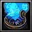
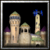

|
Dalaran Town Hall 385  205
205

Trains: |
Dalaran Housing 80
20
Trains: |

Dalaran Power Generator 80
20
|
Altar of Magic 180
50
|
Dalaran Guards Tower 160
60
|
Magical Pen 120
|
Arcane Blacksmith 140
40
|
Dalaran Guard Tower 120
60
|
Arcane Vault 130
30
|
Arcane Shipyard 160
60
Trains: |
|

Dalaran Keep 705
415
|
Arcane Sanctum 150
140
|
Dalaran Zoo 140
140
|
|
Dalaran Castle 1025
625
|
Violet Citadel 1000
600
|